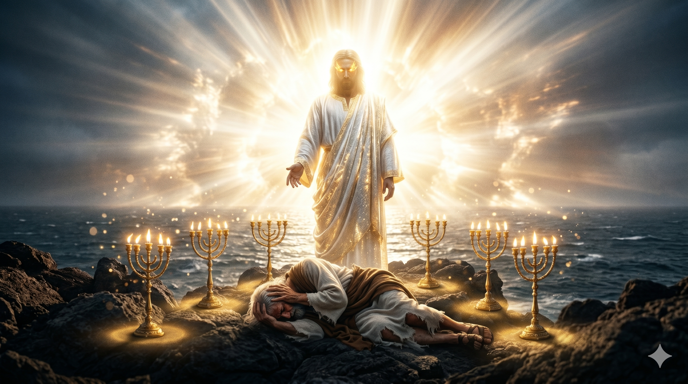

밧모 섬의 거친 바위 절벽 위에서 홀로 무릎을 꿇고 있는 노사도 요한 — 그의 등 뒤로 불같은 빛줄기가 폭발하듯 쏟아지고, 두 손은 얼굴을 가리듯 뻗어 있으며, 에게해의 파도 소리가 들릴 것 같다
"나 요한은 너희 형제요 예수의 환난과 나라와 참음에 동참하는 자라 하나님의 말씀과 예수를 증언하였음으로 말미암아 밧모라 하는 섬에 있었더니… 내가 볼 때에 그의 발 앞에 엎드러져 죽은 자 같이 되매 그가 오른손을 내게 얹고 이르시되 두려워하지 말라 나는 처음이요 마지막이니 곧 살아 있는 자라 내가 전에 죽었었노라 볼지어다 이제 세세토록 살아 있어 사망과 음부의 열쇠를 가졌노니" — 요한계시록 1:9, 17–18
요한은 자신을 "너희 형제"라고 부릅니다. 예루살렘 교회의 기둥, 예수님의 사랑받는 제자 — 그 모든 호칭 대신 그는 함께 환난에 동참하는 형제로 자신을 소개합니다. 그는 지금 밧모 섬에 유배되어 있습니다. 로마 황제 도미티아누스의 박해 시기, 복음을 증언했다는 죄목으로 에게해의 작은 섬에 홀로 버려진 것입니다. 지상에서 가장 오래 살아남은 사도, 예수님의 어머니를 봉양하던 자, 마지막까지 에베소 교회를 섬기던 요한이 이제 유배지에 있습니다. 그러나 하나님은 바로 그 외딴 섬에서 요한에게 말씀하십니다.
주의 날, 성령 안에 있던 요한의 등 뒤에서 나팔 소리 같은 큰 음성이 울립니다. 그가 돌아보자 일곱 금 촛대 사이에 인자 같은 이가 서 계십니다. 흰 머리, 불꽃 같은 눈, 풀무 불에 단련된 빛나는 발, 바다 소리 같은 음성 — 요한은 그 앞에 죽은 자같이 엎드러집니다. 그때 예수님은 오른손을 요한 위에 얹으십니다. "두려워하지 말라." 갈릴리 바다에서, 변화산에서, 빈 무덤에서 수십 년을 걸어온 그 손이 지금 밧모의 유배자를 일으킵니다. "나는 처음이요 마지막이요, 사망과 음부의 열쇠를 가진 살아 있는 자라." 이 한 문장이 계시록 전체의 기초입니다.

일곱 금 촛대 사이에 서 계신 영광의 그리스도와 발 앞에 엎드러진 요한 — 그리스도의 얼굴은 해같이 빛나고, 요한 위로 오른손을 내밀어 일으키시는 장면, 빛과 어둠의 극적인 대비
요한은 세상에서 버림받은 섬에서 하늘의 계시를 받았습니다. 하나님은 때때로 우리를 고립된 자리로 이끄십니다. 아무도 없는 그 자리, 아무도 찾아주지 않는 그 섬에서 오히려 가장 선명한 말씀을 주십니다. 지금 당신이 외롭다면, 격리된 느낌이 든다면, 그 자리가 바로 하나님이 친히 나타나시는 곳일 수 있습니다. 유배는 끝이 아니라, 계시의 시작입니다.
"두려워하지 말라." 죽은 자같이 엎드러진 요한 위에 놓인 그 오른손의 온기를 생각해 보십시오. 영광 중에 나타나신 그리스도는 가장 먼저 그 손을 내밀어 두려워 떠는 제자를 일으키셨습니다. 오늘 우리 앞에 감당할 수 없는 현실이 있다면, 그분은 지금도 같은 말씀을 하십니다. 사망과 음부의 열쇠까지 가지신 분이 우리를 붙드십니다. 이 손을 신뢰하면 어떤 두려움도 이길 수 있습니다.
밧모는 유배지였지만, 하나님의 계시가 임한 곳이었습니다.
당신의 고립된 자리, 아무도 찾지 않는 그 섬에서
지금도 큰 음성이 울리고 있습니다.
두려워하지 말라 — 나는 살아 있는 자라.